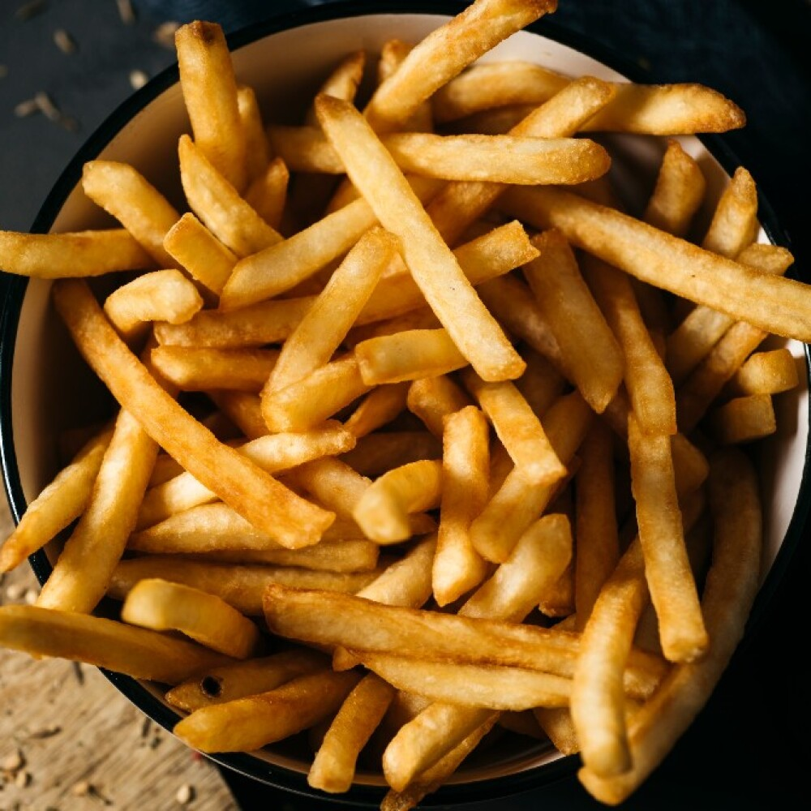

Papas al Horno
Ingredientes:
- 4 papas medianas
- 3 cucharadas de aceite de oliva
- 1 cucharadita de sal
- 1/2 cucharadita de pimienta
- 1 cucharadita de romero seco
- 1 diente de ajo picado (opcional)